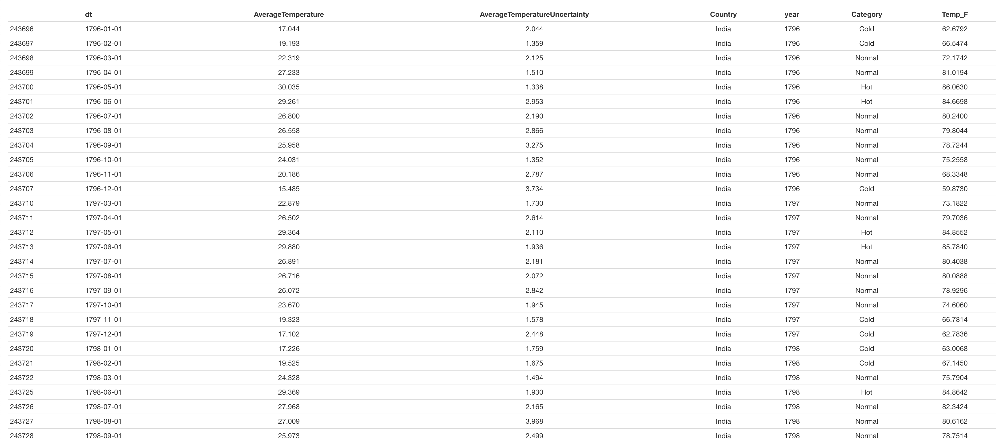
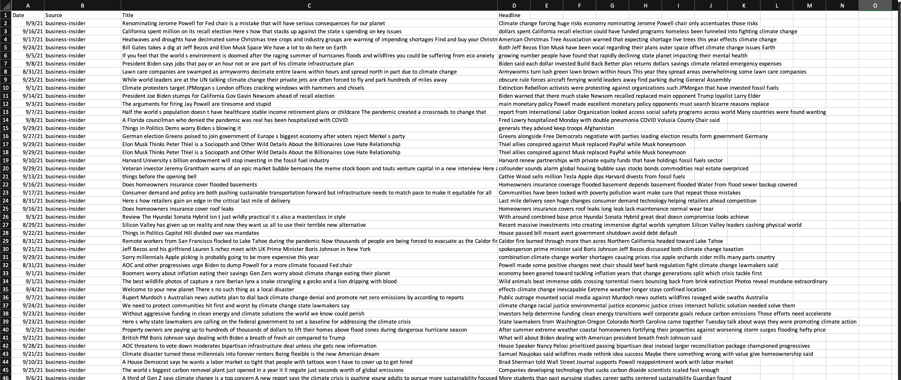

DATA CLEANING.
1. Cleaning with R - Numeric
The R code demonstrated here cleans numeric data (quantitative data).
This raw data showcases the global land temperature by country. The dataset spans across over a hundred countries as well as weather points dating back from the 1750's. The temperature data presented here is in Celsius.

This is a screenshot of the raw country.csv data.
Download Country (Unclean).csvThe main aim of this dataset is to get the cleaned data of two countries: USA and India. The dataset should compose of the dates (both month and year) and the average temperature of each. This data will be useful to identify overall and holistic trends involving the various temperatures across the years.
CODE: R Cleaning - Country
To accomplish this in R, the data was read in by getting the country code 'USA' and 'India'. Next, the date data was converted to months and years as features in the dataset along with the month number correlating to the abbreviation. Then, applying another feature extraction, the celsius data was converted to fahrenheit (by the formula 9/5*C + 32). Next, using a simple key of very cold to very hot, based on the fahrenheit scale, a feature was made to determine the "sense" of the weather. Finally, this transform was outputted as a csv. To view the final USA csv, click on the link below.

This is a screenshot of the final csv of USA countries. Output generated by library formattable.
Download USA_Climate.csv
This is a screenshot of the final csv of India countries. Output generated by library formattable.
Download India_Climate.csvThe cleaning involved with this dataset was all: checking for missing values, N/A values, as well as outlier detection. Both the countries have ~ 2000 data points (from the 577,000 in the total dataset) and upon cleaning only lost less than 5% of the data. This indicates that most of the data was clean.
To speak upon outliers, since the dataset was already the average there wasn't any outliers. This was confirmed by plotting a histogram.

2. Cleaning with Python - Text (CSV)
The Python code demonstrated here cleans text data (qualitative) via .csv.
The raw data collected for Python data cleaning showcases various unfiltered Tweets, Tweet ID, and sentiment. There are approximately over 40,000 tweets.

This is a screenshot of the raw twitter_sentiment.csv data.
Download Twitter Data.csvThe main aim of this dataset is to gather the text data and analyze the contents of the text. The analysis is both understanding the sentiment (how positive or negative the tweet is) as well as figure out how many people believe in climate change. This analysis will be proven vital when looking furthered to modern day solutions to help stop global warming. The code can be seen below.
CODE: Python Cleaning - Tweets
The text data was cleaned by first importing all the important libraries, such as numpy, pandas, nltk, etc. Next, the raw data is parsed through the tweet data and remove any unnecessary symbols (such as commas and '@') and strip it of any white space. Upon completion, using NLKT, the tweets are then abstracted by removing stop words such as and, like, etc. This gives a better representation of what the tweets are (i.e the crux of the tweets. Then, we continue to clean it and using PunktSentenceTokenizer, the tweets are broken down into sentences using a previously built in tool using the library NLKT. We then pass the tweets through the Tokenizer to get bite-sized sentences which can be parsed through. The cleaned data can be seen below for all 40,000+ tweets.

This is a screenshot of the cleaned twitter_sentiment.csv data.
Download Cleaned Twitter Data.csv3. Cleaning with Python - Text (JSON - extra)
The Python code demonstrated here cleans text data (qualitative) via .JSON.
The raw data collected here for this project is in JSON. The source of this data is from NewsAPI, where news articles are generated around keywords related to climate change. The data gathered can be found in the "Data Gathering" section.

This is a screenshot of the cleaned news_API.csv data.
Climate Change _ NEWS API.csvThe main aim of this dataset is to gather the text data and analyze the contents of the headlines and the first lines of the text. The news gathered from the NewsAPI can prove vital when looking at current day legislative policies that are being passed to help reduce the drastic effects of climate change.
CODE: Python Cleaning - NEWS API
The text data was cleaned by first importing all the important libraries, such as numpy, pandas, nltk, etc. Next, the data was parsed via JSON and gathered all the key attributes such as title, url, etc. This was then further more cleaned by removing unnecessary stop words. Finally, all the required elements were stored into a dataframe and outputted as a .csv.